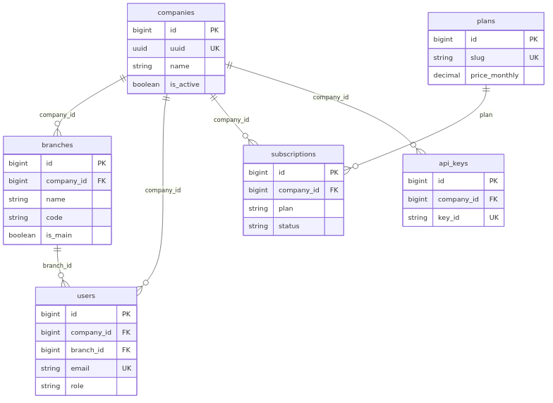
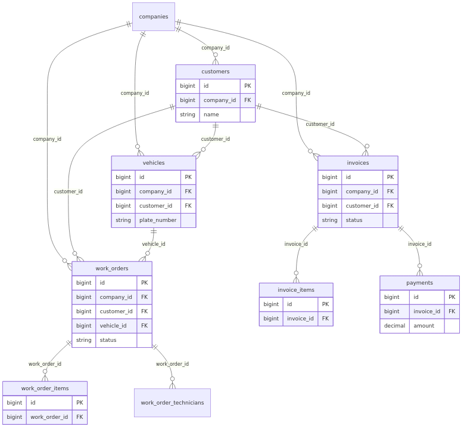
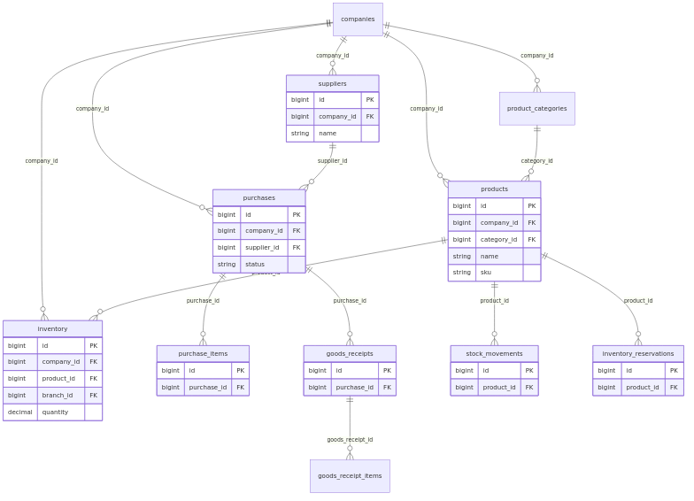
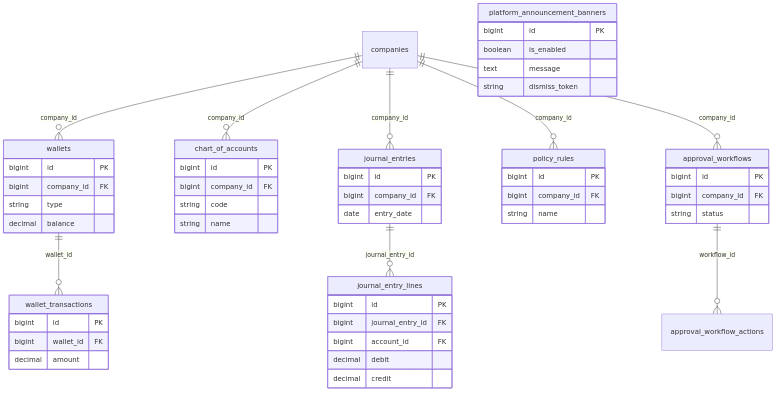

تاريخ إعداد التقرير: 2026-04-05
نسخة PDF: يُولَّد الملف System_Comprehensive_Report.pdf من هذا المستند (انظر docs/report-pdf.css وأمر التوليد في نهاية القسم 5.8).
النطاق: وصف البنية التقنية، الأعمال المنفذة في جلسة التطوير الأخيرة، جاهزية النظام، قاعدة البيانات والعلاقات، ومخططات ERD، وما لم يُنفَّذ أو يبقى مسؤولية التشغيل.
المنصة SaaS متعددة المستأجرين لقطاع ورش السيارات والأساطيل والتشغيل الميداني: خلفية Laravel 11، واجهة Vue 3 + TypeScript، قاعدة PostgreSQL، Redis للتخزين المؤقت والطوابير، Nginx كطبقة عكسية، Docker Compose للتشغيل المحلي والنشر الشبيه بالإنتاج.
في جلسة التطوير المشار إليها في هذا التقرير تم تنفيذ تحسينات على صفحة الهبوط التسويقية، إضافة شريط إعلان منصة قابل للإدارة من لوحة مشغّل المنصة، تعزيز أمان وسلوك nginx لمنع فهرسة مجلد /landing، توسيع تتبّع أحداث الهبوط، واختبارات آلية جزئية مؤكدة.
جاهزية النظام: البناء الإنتاجي للواجهة (npm run build) وفحص nginx لملف الواجهة الإنتاجية وPHPUnit لمسار الإعلان نجحت في بيئة التحقق المستخدمة؛ النشر على خوادمكم (مثل pro.osas.sa) واختبار القبول الكامل يبقى مسؤولية فريق التشغيل وفق Staging_Execution_Now.md.
/landing)| البند | الوصف |
|---|---|
| تجربة المستخدم | تبسيط أزرار الهيرو، روابط ثانوية داخل <details>، شريط تقدّر للتمرير، شريط ثقة قصير، مسار ذكي يربط «نوع الضغط التشغيلي» بقسم قبل/بعد مع تمرير سلس |
| التنقل | روابط في الرأس (موبايل + سطح مكتب)، معرّفات #faq و #use-cases |
| المحتوى التقني | نص المطوّرين (أوامر npm) داخل <details>؛ وصف ميتا تسويقي أوضح |
| التحليلات | أحداث إضافية في landingAnalytics.ts (تنقّل الرأس، فتح «استكشف»، قفزة persona) |
الملفات الرئيسية: frontend/src/views/marketing/LandingView.vue، frontend/src/utils/landingAnalytics.ts.
| الطبقة | التنفيذ |
|---|---|
| قاعدة البيانات | جدول platform_announcement_banners (صف منطقي واحد عبر theOne()) |
| API | GET/PUT /api/v1/platform/announcement-banner، GET .../admin، حماية التحديث بـ SaasPlatformAccess::isPlatformOperator |
| الواجهة | مكوّن PlatformPromoBanner.vue في AppLayout؛ تبويب «شريط الإعلان» في AdminDashboardView عند وضع مشغّل المنصة |
| السلوك | dismiss_token يتجدد عند الحفظ؛ إخفاء محلي عبر localStorage عند السماح بالإخفاء |
الملفات الرئيسية: الهجرة 2026_04_05_120000_create_platform_announcement_banners_table.php، PlatformAnnouncementBanner (Model)، PlatformAnnouncementBannerController، UpdatePlatformAnnouncementBannerRequest، api.php، PlatformPromoBanner.vue، AdminDashboardView.vue.
| الملف | التغيير |
|---|---|
frontend/nginx.conf |
autoindex off، رؤوس أمان، location ^~ /landing/showcase/ للأصول الثابتة، إعادة كتابة landing / asas-pro / asaspro إلى /index.html، حظر /. |
docker/nginx/conf.d/default.conf |
autoindex off على مستوى الـ server |
| الفحص | النتيجة (حسب التشغيل في المشروع) |
|---|---|
npm run build (واجهة) |
نجاح (يشمل vue-tsc وvite build) |
nginx -t على frontend/nginx.conf |
صياغة صحيحة |
vendor/bin/phpunit --filter=PlatformAnnouncementBannerTest |
4 tests, 13 assertions — OK |
ملاحظة: php artisan test في بعض البيئات قد يتصل بـ 127.0.0.1 لقاعدة البيانات بسبب .env؛ التشغيل المباشر لـ phpunit يقرأ phpunit.xml (DB_HOST=postgres، قاعدة saas_test).
| الطبقة | التقنية | إصدار تقريبي / ملاحظة |
|---|---|---|
| لغة الخلفية | PHP | ^8.2 |
| إطار الخلفية | Laravel | ^11 |
| مصادقة API | Laravel Sanctum | ^4 |
| الواجهة | Vue | ^3.4 |
| لغة الواجهة | TypeScript | — |
| حالة التطبيق | Pinia | ^2.1 |
| التوجيه | Vue Router | ^4.3 |
| بناء الواجهة | Vite | 5.x |
| HTTP عميل | Axios | ^1.6 |
| واجهة ورسوم | Headless UI، Heroicons، Tailwind (عبر Vite) | — |
| خرائط (حيث يُستخدم) | Leaflet | ^1.9 |
| تقارير/تصدير | Chart.js، jsPDF، xlsx | — |
| مراقبة أخطاء (اختياري) | Sentry (Laravel + Vue) | — |
| قاعدة البيانات | PostgreSQL | 15 (في Docker Compose) |
| تخزين مؤقت / طوابير | Redis | 7 |
| خادم ويب | Nginx | 1.25 (صور Alpine) |
| حاويات | Docker + Docker Compose | — |
| اختبار خلفية | PHPUnit | 11.x |
| اختبار واجهة | Vitest | — |
companies (المستأجر).branches: فروع تابعة لشركة واحدة؛ المستخدمون يرتبطون بـ company_id وغالباً branch_id.HasTenantScope على النماذج الحساسة مع فلترة حسب الشركة (والفرع حيث ينطبق).plans، subscriptions، حدود الاستخدام وفق الباقة./api/v1/.auth:sanctum، tenant، financial.protection، branch.scope، subscription، وصلاحيات دقيقة (permission:...).SAAS_PLATFORM_ADMIN_EMAILS (config/saas.php) — وصول محدود لواجهات مثل قائمة الشركات وتحديث الإعلان.تشمل التطبيق مسارات فريق العمل (Staff) داخل AppLayout، ومسارات الأسطول والعميل في تخطيطات مخصّصة؛ التفعيل يمكن تقييده عبر VITE_ENABLED_PORTALS عند البناء.
app — PHP-FPM / Laravel nginx — عكسي للواجهة التطويرية ولـ API frontend — Vite dev postgres، redis queue_high، queue_default، queue_low، schedulerصورة إنتاج الواجهة في frontend/Dockerfile (مرحلة production) تستخدم frontend/nginx.conf كـ default.conf داخل nginx.
ملاحظة: يوجد أكثر من 80 ملف هجرة؛ أدناه تجميع منطقي وليس قائمة كل عمود. العلاقات النموذجية: Company 1—N Branch، Company 1—N User، Branch 1—N User (حسب التصميم)، وجداول التشغيل ترتبط بـ
company_id(وأحياناًbranch_id).
| الجداول / المجال | العلاقات والدور |
|---|---|
companies |
جذر المستأجر |
branches |
company_id |
users |
company_id, branch_id؛ أدوار وصلاحيات (Spatie-style: roles, permissions, جداول ربط) |
plans, subscriptions, subscription_invoices |
اشتراك الشركة بالباقة |
personal_access_tokens |
Sanctum |
api_keys, api_usage_logs |
تكامل خارجي |
| المجال | جداول ممثّلة |
|---|---|
| العملاء والمركبات | customers, vehicles |
| أوامر العمل | work_orders, work_order_items, work_order_technicians |
| المناطق والحجوزات | bays, bookings, bay_maintenance_logs |
| الموارد البشرية | employees, attendance_logs, tasks, commissions, commission_rules, leaves, salaries |
| الخدمات | services, bundles, bundle_items |
| المجال | جداول ممثّلة |
|---|---|
| المنتجات | product_categories, products |
| المخزون | inventory, inventory_reservations, stock_movements |
| الوحدات | units, unit_conversions |
| الموردون والشراء | suppliers, purchases, purchase_items, goods_receipts, goods_receipt_items |
| المجال | جداول ممثّلة |
|---|---|
| الفواتير والدفع | invoices, invoice_items, payments |
| المحافظ | wallets, wallet_transactions, تطورات customer_wallets (هجرات الأسطول) |
| المحاسبة | chart_of_accounts, journal_entries, journal_entry_lines |
| عدادات الفواتير | invoice_counters (+ تسلسل عالمي في هجرات لاحقة) |
| ZATCA / سجلات | zatca_logs وحقول متعلقة في invoices |
| المجال | جداول ممثّلة |
|---|---|
| السياسات والموافقات | policy_rules, approval_workflows, approval_workflow_actions |
| التدقيق والتنبيهات | audit_logs, alert_rules, alert_notifications |
| المجال | جداول ممثّلة |
|---|---|
| Webhooks | webhook_endpoints, webhook_deliveries |
| Idempotency | idempotency_keys |
| الدعم | support_tickets, support_ticket_replies, knowledge_base, sla_policies, … |
| الإحالات | referrals, loyalty_points, loyalty_transactions, referral_policies |
| العقود والوقود والمركبة | contracts, contract_notifications, fuel_logs, vehicle_settings, vehicle_documents |
| عروض الأسعار | quotes, quote_items |
| الإضافات | plugins_registry, tenant_plugins, plugin_logs |
| الإشعارات | notifications |
| الذكاء / الأحداث | domain_events, event_record_failures, intelligence_command_center_governance_audits |
| الاجتماعات (MVP) | meetings, meeting_participants, meeting_minutes, meeting_decisions, meeting_actions, meeting_attachments |
| المطابقة المالية | financial_reconciliation_runs, financial_reconciliation_findings, financial_reconciliation_finding_histories, financial_reconciliation_run_attempts |
| الإعدادات القابلة للضبط | vertical_profiles, config_settings |
| الفواتير الذكية / تذكيرات | nps_ratings, warranty_items, service_reminders |
| الجدول | الغرض |
|---|---|
platform_announcement_banners |
إعلان واحد للواجهة لجميع المستأجرين؛ يُدار من مشغّلي المنصة |
المنصة تضم أكثر من 80 هجرة؛ عرض كل الجدول في رسم واحد يصعّب القراءة. لذلك يُعرض أربعة مخططات منطقية تغطي الجزء الأكثر استخداماً في التشغيل اليومي. الأسماء والمفاتيح تعكس النموذج المفاهيمي؛ قد تختلف تسميات أعمدة فعلية أو فهارس بين الهجرات.

يشمل: companies، branches، users، plans، subscriptions، api_keys. رموز Sanctum (personal_access_tokens) وربط الأدوار (roles / permissions) موجودة في الهجرات ولم تُرسم هنا لتبسيط الصورة.

يشمل: customers، vehicles، work_orders (+ بنود وفنّيين)، invoices (+ بنود)، payments.

يشمل: products، product_categories، inventory، stock_movements، inventory_reservations، suppliers، purchases، goods_receipts (+ بنود).

يشمل: wallets، wallet_transactions، chart_of_accounts، journal_entries (+ بنود)، policy_rules، approval_workflows (+ إجراءات)، platform_announcement_banners (بدون company_id — إعداد على مستوى المنصة).
docs/diagrams/erd-01-core-tenancy.mmd … erd-04-*.mmd minlag/mermaid-cli):cd docs/diagrams
for f in erd-01-core-tenancy erd-02-operations-crm erd-03-inventory-purchases erd-04-finance-governance-platform; do
docker run --rm -v "$(pwd):/data" minlag/mermaid-cli:latest -i "/data/${f}.mmd" -o "/data/${f}.png" -b transparent
done
docs نفّذ .\build-report-pdf.ps1 (يتطلب Node وDocker وصورة gotenberg/gotenberg:8).bash docs/build-report-pdf.shmarked، ثم node build-report-html.mjs (يدمج report-pdf.css ويُضمّن صور diagrams/erd-*.png كـ base64 ويزيل روابط .md التي تربك بعض محركات PDF)، ثم:# بعد إنشاء docs/System_Comprehensive_Report.html
docker run -d --rm -p 3399:3000 --name gt-report-pdf gotenberg/gotenberg:8
sleep 8
curl -f -S -X POST "http://127.0.0.1:3399/forms/chromium/convert/html" \
-F "files=@System_Comprehensive_Report.html;filename=index.html" \
-o System_Comprehensive_Report.pdf
docker rm -f gt-report-pdf
يُنشَأ System_Comprehensive_Report.pdf في docs/ بجانب ملف Markdown.
Staging_Execution_Now.md، Staging_Deploy_Runbook.md، Staging_Manual_Test_Checklist.md.Makefile / scripts/staging-gate.sh — بوابة جودة قبل الدمج.backend/.env.staging.example، frontend/env.staging.example (إن وُجدت).| المحور | الحالة | تعليق |
|---|---|---|
| بناء الواجهة الإنتاجي | مؤكد نجاحه في التشغيل المرجعي | يشمل TypeScript |
| صياغة nginx للواجهة الإنتاجية | مؤكد nginx -t |
يجب نشر نفس الملف على الخادم الفعلي |
| اختبارات مسار الإعلان | 4 اختبارات ناجحة | لا تغطي كامل النظام |
| اختبارات النظام بالكامل | غير مُعلَن «PASS كامل» هنا | يشغّل الفريق make verify / PHPUnit كاملاً حسب السياسة |
| النشر على استضافة الإنتاج/التجريب | خارج نطاق المستودع فقط | يتطلب CI/CD، أسرار، migrate، وبناء VITE_* الصحيح |
| اختبار يدوي Staging | مطلوب حسب الوثائق | لا يُستبدل بالاختبار الآلي فقط |
pro.osas.sa أو أي بيئة — دمج Git، pipeline، ونسخ dist كامل مع nginx.conf المحدّث. platform_announcement_banners وغيرها). SAAS_PLATFORM_ADMIN_EMAILS لمن يُسمح له بإدارة الإعلان وقائمة الشركات. php artisan test إذا كان .env يفرض DB_HOST=127.0.0.1 داخل الحاوية (استخدم vendor/bin/phpunit أو اضبط البيئة). المنصة ناضجة تقنياً كمنتج كبير متعدد الوحدات مع PostgreSQL وعلاقات شركة ← فرع ← مستخدم وطبقة خدمات واسعة. تم في الجلسة المذكورة: تحسين الهبوط، إعلان منصة مع API وواجهة إدارة، تصليب nginx، واختبارات مستهدفة للإعلان. الجاهزية للإنتاج تتطلب اتباع مسار Staging الرسمي، نشراً صحيحاً للواجهة وقاعدة البيانات، واختباراً يدوياً موثَّقاً — وذلك خارج ما يثبته المستودع وحده.
نهاية التقرير.